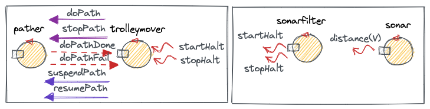
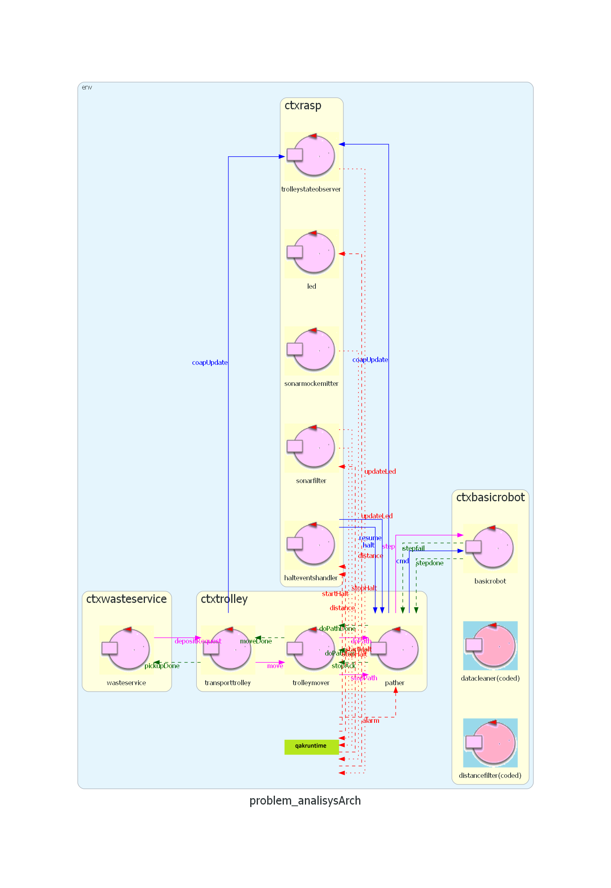

Introduction
SCRUM goal
In the Sprint2 we aim to analyze the problems linked to the functionalities of theRaspberry Service

The objectives of this Sprint are:
- Implement Sonar interaction.
- Implement Led interaction.
Requirements
Problem analysis
Sonar interaction analysis
TheAs previoulsy mentioned in Sprint0, this project uses a Sonar that detects object proximity.
When the current distance is less than DLIMIT, the trolley must be HALTED. After that, as soon as it becomes higher than DLIMIT, the trolley must resume its routine.
The sonar's behaviour is exemplified by a script written by the customer: sonarDataGen.kt
In what form does the trolley receive the information from the Sonar?
RAW DATA: the trolley receives all detection data from the Sonar
With this strategy, all distances detected by the Sonar get sent to the trolley.He will then be the one to check every detection for a distance value that is less than DLIMIT.
This puts a lot of overload onto the trolley (i.e. receiving a huge amount of data and filtering it), that already has important responsibilities. In a Qak script, the messages would be defined as:
distance: distance(V)FILTERED DATA: raw data is hidden from the trolley
This strategy implies the definition of a "middle man", an entitiy that filters the raw data from the Sonar and presents it to the transporttrolley.By handling all the incoming data with a different entity, the transporttrolley only needs to know when a certain detection has gone under the predefined limit (DLIMIT) and when it has subsequently returned above it.
This division of responsibility makes it so the trolley receives only two messages per HALT (one at the start and one at the end).
In a Qak script, the messages would be defined as:
distance: distance(V)
startHalt: startHalt(_)
stopHalt: stopHalt(_)- Receive raw data from a mock sonar (more info in the "other tools" section)
- Filter the data by considering the DLIMIT.
- Sending startHalt and stopHalt according to the already analyzed logic.
Customer's tools
In the project section of this Sprint, the sonarfilter actor will be substituted by a more complete and detatched filtering system.More specifically, we will use the
NOTE : Seing as the messages sent by these components are Events, the previously mentioned messages (distance(V), startHat(_), stopHalt(_))
have been also defined as Events.
HALT problem
The next issue is the implementation of the HALT functionality that is tied to the sonar interaction.The objective here is to stop/start the movement of the robot based on the startHalt and stopHalt Events.
In the Sprint1 we defined a complete model of the core service, which includes the movement of our trolley/robot.
Now, the goal is to stop the trolley either in the middle or in the beginning/end of the current path. In essence, we have to consider all moves inside a path to properly stop the robot at the requested moment.
Using trolleymover
The first strategy we tried to use was to modify theSo, the latter checked for the Halt messages:
- After every move inside the same path to intercept startHalt during the robot's movement
- Between the end of the current path and the start of the next one to cover the instances where the trolley is not moving (i.e. during the pickup and dropout actions)
Our pather actor is constantly executing movement tasks, which could cause the loss of Events occurring in an unfortunate moment (as Event messages are not queued).
First interruption strategy
In the beginning we opted to completely change the strategy by modifying both theThis way, with a higher perspective of the trolley's movements given by
This solution, while functional, also presented issues:
- The division of tasks between
pather andtrolleymover violated the Single Responsibility Principle as both actors were required to distinguish the trolley's state. - Many changes in the structure of our model were required, bringing consfusion to the internal structure of both actors

Final interruption strategy
To fix this, we reverted back to the initial strategy and added the newOther tools
Considering the purpose of the problem analysis, we decided to create a mock version of the sonar to easily test our new simplified model.We did so by writing a simple script in python (trigger_stop.py) that connects to the system and generates/emits events based on a certain interval [START, STOP]:
- Messages are sent with a descending distance value (from STOP to START)
- Then, the order is reversed and messages are sent with an ascending distance value (from START to STOP)
Led interaction analysis
As a reminder, the led can be found in 3 states, depending on the trolley's behavior:ON : if the trolley is stoppedOFF : if the trolley is at HOMEBLINKING : if the trolley is moving
Of course, being a separate component (an actor, as of our Sprint0 analysis), the led will have to be notified of the current state of the trolley to properly change between its own states.
What type of message do we need to notify the led ?
The led can simply be notified of the changes in the system by events.Such notifications are only forwarded in case there is an effective change in the led Status.
The reasoning behind the decision of using events is that they are useful in case a certain state of the system needs to stay updated on multiple components.
In fact, if we also consider that the GUI (which is not the topic of this particular Sprint) will need to stay updated on the state of the led, we can see how useful it is to use Events instead of Dispatches, as the latter would require multple messages.
What component notifies the led of its desired state ?
While analyzing this problem, we have come up with two distinct solutions:Events are emitted by the trolley movement actors
The first solution implies that theEvent stopped: stopped(_)
Event moving: moving(_)
Event at_home: at_home(_)The state of the trolley is observed using CoaP
Instead, these events are emitted by our new actorDispatch coapUpdate: coapUpdate(RESOURCE, VALUE)
Event updateLed: moving(STATE)STATE := ON | OFF | BLINKING Other tools
To model a mock version of the Led we definded a simple new actor:After every new updateLed, it prints the new state od the led.
Current system architecture

demo_single_context.qak
We have prepared the following tests for this particular model:
Test Plans
Project
Final Model preview
This is the model created following the problem analysis, integrating the raspberry and its elements in the system.It uses the coordinate strategy and all previously mentioned tools provided by the customer (some of them have been modified and will be discussed shortly).
As usual, it was created using the QAK modeling language and its code can be found here:
Implementation of Sonar functions
Sonar Events Emission
In the project phase we introduced a way to choose between a real sonar and a simulated sonar by changing the emitter of events based on the system configuration file.To do this we created two CodedActors, one simulator (sonarEmitterSimulator) and one concrete sonar (sonarEmitterConcrete):
- sonarEmitterSimulator is a mock version of the sonar that replaces the previoulsy defined trigger_stop.py.
- sonarEmitterConcrete reads the data from the real sonar by executing sonarAlone.c
(already mentioned in the Sprint0) and emits it as a localStreamEvent.
The objective is to run this CodedActor on the RaspberryPi to read real sonar data.
Sonar Events Filtering
As a first decision, we chose to change how the sonar emissions are filtered and delivered in our system.While in the problem analisys everything was handled by our
Infact, while filtering was necessary, adopting the use of normal standalone actors would have meant that each component of the filtering process would have sent
This is redundant and could strain the network.
The first actor in the pipe will be either
We have reporpoused these scripts given by the customer to achieve our goal:
- dataCleaner
This CodedActor in the pipe defines an interval of distances [min, max]. If the recorded distance from our emitter (real or mock) is outside that interval, the event is not propagated.
We do this to clean the incoming data and put less pressure on the following actors. - distanceFilter
This particular CodedActor replaces oursonarfilter in the pipe by emitting the startHalt and stopHalt events with the same logic.
Tools
sonarSystemBuilder
If we are running a simulation, it will put
Otherwise, it will use
Implementation of Led functions
Changes from problem analisys
We have decided to make somePreviously, our
Our reasoning behind this was that other components (i.e.
However this strategy could
To solve this issue, we decided to use
So, now we use:
Dispatch updateLed(STATE)
//The possible commands do not change
STATE := ON | OFF | BLINKING Project changes
We approched the inclusion of the real Led similarly to the Sonar.Which means that, in the final demo it will be possible to use both the simulated Led and the real one on the raspberry. The customer provided us with a library that helps us in doing so:
It exposes Factories and Interfaces that can create real/mock Sonars and Led components.
In our system, we are just going to use the Led portion of this library:
- DeviceFactory: we use it to create either a LedConcrete object (that can turn ON and OFF the REAL led) or a LedMock object (that changes the state of a fake led instance) based on the current System Configuration.
- ILed: is an interface of the object created by the DeviceFactory. The methods turnOn() and turnOff() are used to interact with the led.
LedUtils
LedUtils is a wrapper we created to implement some useful methods to manage the led creation and status using DeviceFactory and ILed:- fun createLed(simulation: Boolean, ledGui: Boolean): is used to instantiate an ILed and allows us to create the led depending on the necessities using the DeviceFactory previously mentioned.
- fun getLedStatusFromCoap(resource: String, value: String): LedState: allows us to monitor a Coap Resource that gives the informations we need to determine the current LedState.
- turnOn(): turns ON the ILed.
- turnOff(): turns OFF the ILed.
System Distribution
When it comes to the distribution of our system, we tried two main strategies.The first and most simple was to compile a
This stratedy worked from the beginning but we also tried something more complicated through the use of
- PC: a
Docker-compose.yml file defined so that each context had its own container. - Raspberry: a Docker-file to only run the rasp context.
System execution details
To run the whole distributed system, follow the instructions in our run_system_guide.txt file.Current system architecture
Work plan
In
SCRUM Goal:
- Realize the GUI
- Connect the GUI to the system
- Implement the
GUI updating methods
Next Sprint: Sprint 3
Task assignment
| Task | Description | Developers |
|---|---|---|
| Modifying the existing Qak actors and making new ones to achieve the Halt behaviour. | ||
| Creating the CodedActors, Qak actor and the pipe. | ||
| Implementing the Qak actor and the LedUtils wrapper. | ||
| Creating the .jar files and distributing the system. | Alex Gianelli Federico Andrucci |
|
| Creating test routines for the sonar actor and the pipe system. | ||
| Creating test routines for the led actor. | ||
| Creating test routines for the TCP connections. |